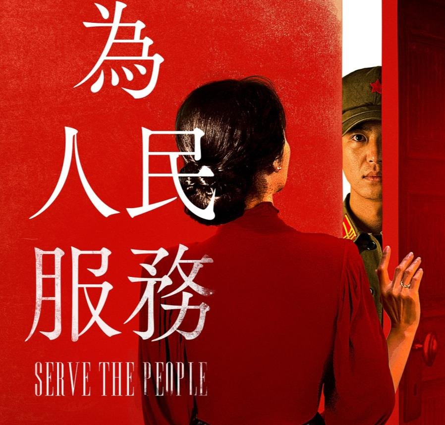
閻連科《為人民服務》
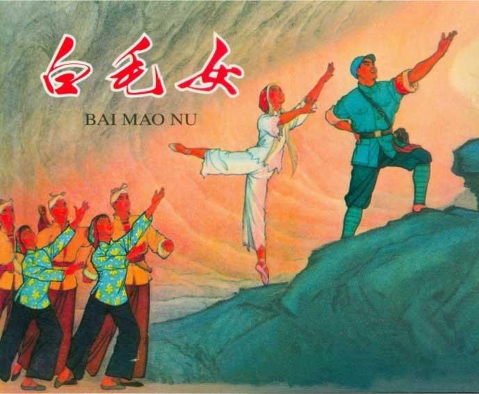
《白毛女》（芭蕾舞劇）
電影《殺夫》（1984）
性別暴力
Gender Violence
「性暴力被轉換成為階級暴力。」
CHI 4335 面對極端 · 第 11 週 · 性別暴力
閻連科《為人民服務》（續）；李海燕（1999）；巴羅（Barlow, 2004）；申丹（2004）
← → 翻頁 · 1–7 章節 · G 跳至頁碼 · L 雷射筆 · F 全螢幕
「值了」
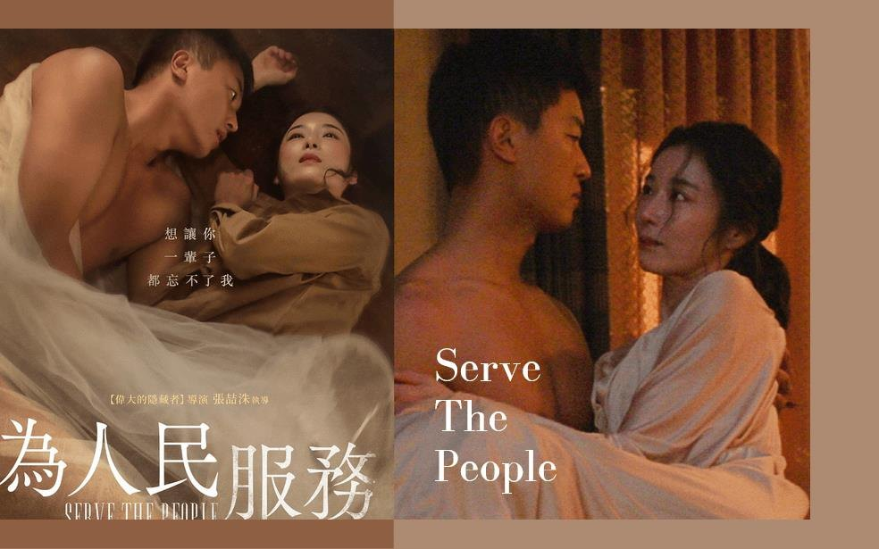
閻連科《為人民服務》（2005）；電影改編（2022）
「幸好，這個當兒，她醒了過來。她首先把頭偏了一下，掃了一眼屋子和坐在她身邊的吳大旺，仿彿轉眼就明白了發生過的一切樣。……
她說，值了，我這一輩子活得值了，讓我劉蓮現在死了，我也心甘啦。」閻連科《為人民服務》
古人如何想像「幸福」？
神
eu-daimonia：「好」＋「神靈」。幸福是神給的，也可以被神收回（約伯 Job）。
死亡
雅典立法者梭倫（Solon）對以富有聞名的呂底亞國王克洛伊索斯（Croesus）說：一個人還活着，就不能說他幸福（希羅多德 Herodotus《歷史》）。
運氣
happ（機遇）· bon-heur（好運）· Glück · felix · szczęście（好的「份額」）
“…happiness, rather, is a characterization of an entire life that can be reckoned only at death.”
幸福是對一整個人生的評價，只能在死亡時結算。
McMahon (2006)，引自 Haiyan Lee, “The Rise and Fall (and Rise Again) of Vernacular Happiness,” JMLC 14.1 (2017), 99從「福祿壽」到「幸福」
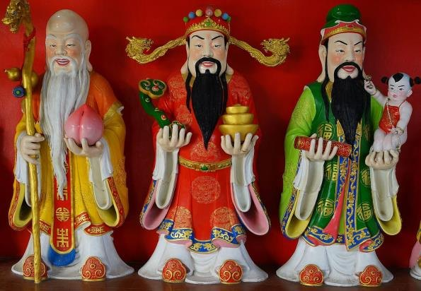
福祿壽三星
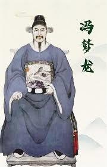
馮夢龍
傳統
福、祿、壽：由命運、神明賜予，用客觀標準評價一生。
“…Life, Liberty and the pursuit of Happiness.”
《美國獨立宣言》，1776。幸福成為人人今生都可追求的目標。Haiyan Lee (2017), 91–92, 99
一座城，為一個女人傾覆
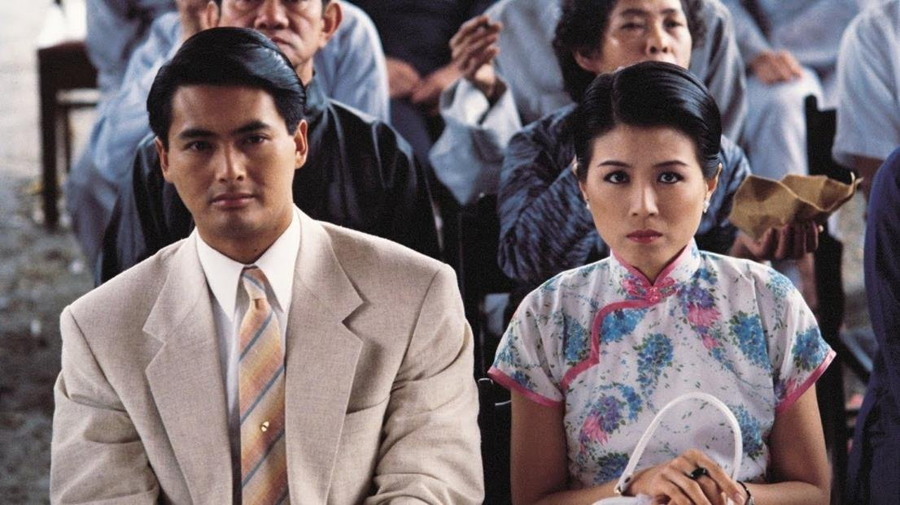
電影《傾城之戀》（1984，許鞍華導演）
「香港的陷落成全了她。但是在這不可理喻的世界裏，誰知道什麼是因，什麼是果？誰知道呢？也許就因為要成全她，一個大都市傾覆了。成千上萬的人死去，成千上萬的人痛苦着，跟着是驚天動地的大改革……流蘇並不覺得她在歷史上的地位有什麼微妙之點。她只是笑吟吟的站起身來，將蚊香盤踢到桌子底下去。」張愛玲〈傾城之戀〉，1943
一個女人的婚姻，比一座城和成千上萬的死者更重要。《為人民服務》做的是同一件事：文化大革命成了一段私人愛情的舞台。
社會主義的幸福觀
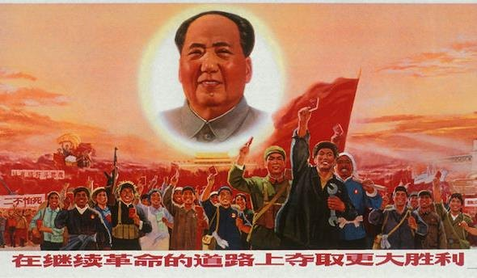
- · 為人民謀幸福：個人的痛苦，是集體未來的代價。
- · 革命禁慾主義：私人的幸福可疑，甚至是罪。
「我們兩個都弄碎了毛主席的像，我們誰告了誰，誰都是現行反革命分子了，可你是無意弄碎了毛主席的石膏像，我是故意撕碎了毛主席的像，我是大反革命分子，你是小反革命分子，現在，你吳大旺信了我劉蓮一輩子心裏有你的話了吧。」《為人民服務》
吳大旺也撕下牆上的毛主席語錄，「說我是特大的反革命分子，要槍斃該槍斃我兩回呢」。愛情的誓言，就是一樁罪行。
誰讓誰上樓？
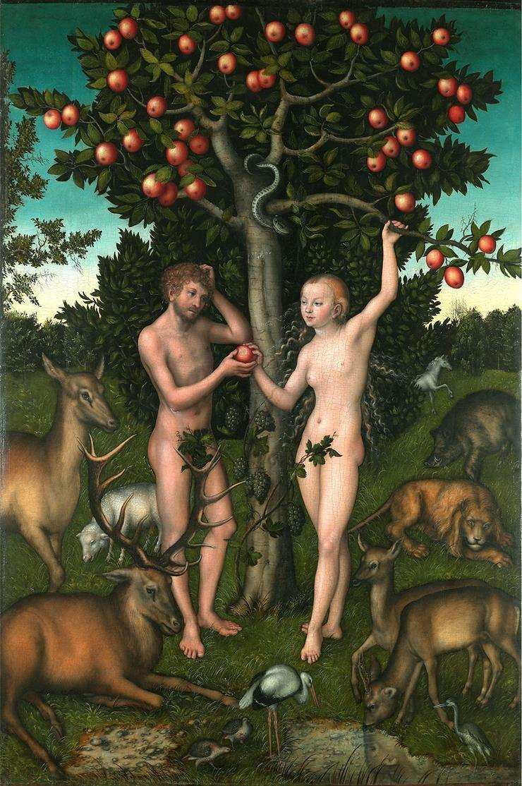
克拉納赫（Lucas Cranach），《亞當與夏娃》
就那麼盯著他說，小吳，你剛才說什麼？
他說，我說是你讓我上樓來的。
她說，我什麼時候讓你來了？
他說，你剛才在廚房不是指了一下為人民服務的牌子嗎？《為人民服務》
亞當說：「是你給我作伴的那個女人給了我那樹上的果子，我才吃了。」……女人答說：「是蛇哄騙了我，我才吃了。」《創世紀》3:12–13
一塊「為人民服務」的牌子，成了伊甸園的果子：誰先開始？
消失
劉蓮「如一粒雪花樣從這個軍區大院的一號院落消失了……只有一股淡極淡極的香味留在她存在過的人世上。」《為人民服務》
「太守即遣人隨其往，尋向所誌，遂迷，不復得路。」陶淵明〈桃花源記〉
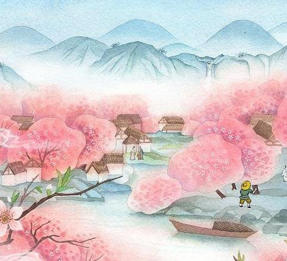
今天的問題
一個女性的不幸，如何被思考？
「她作為一個女子在父權社會中的遭遇漸漸被置換為她作為勞苦大眾的代表性一員在階級社會中的遭遇。也即是說，性暴力被轉換成為階級暴力。」李海燕，頁 115
《白毛女》的故事 以 1945 年歌劇為準
- 除夕：佃農楊白勞躲債回家，給女兒喜兒紮上紅頭繩。
- 地主黃世仁逼債，楊白勞被迫按手印，拿喜兒抵債，當夜死去。
- 喜兒被帶進黃家，受黃母虐待，被黃世仁強姦。
- 黃要娶親，還要把她賣掉。喜兒逃進深山。
- 她靠廟裏的供品活下來，頭髮全白，被村民當作「白毛仙姑」。
- 未婚夫大春參加八路軍，回村，在山洞裏認出喜兒。
- 鬥爭大會：黃世仁受審，喜兒「翻身」。
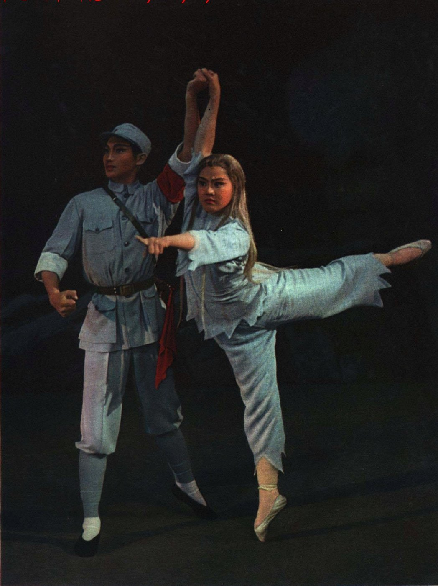
舞劇《白毛女》，喜兒與大春（1967）
各版本改動很大：楊白勞是自盡還是被打死？強姦有沒有發生？孩子活不活？下面一個一個看。
一個故事，四個版本
口頭傳說
「白毛仙姑」。三個人物：女兒、父親、惡霸地主。
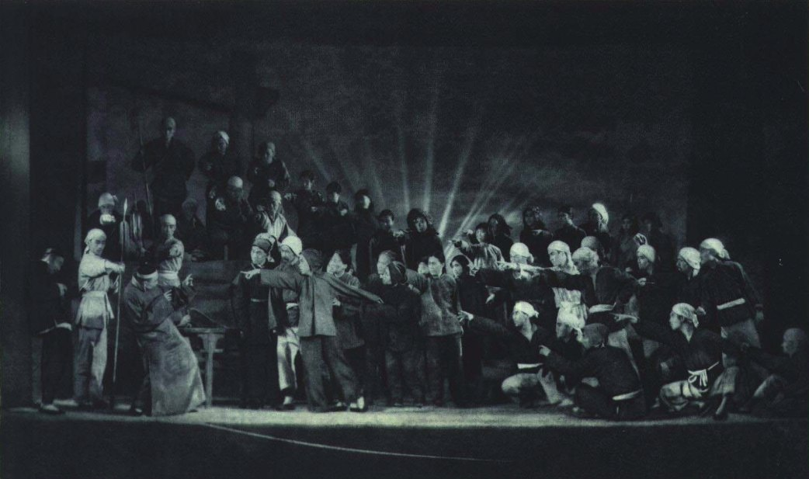
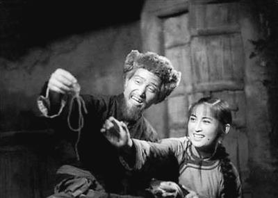
原來的傳說，「可以發生在任何一個把女人作為交換對象的父權社會裏」。
李海燕，頁 111除夕：一個和睦的村莊
楊白勞為喜兒紮紅頭繩。電影《白毛女》（1950）
孟悅：歌劇加了兩樣東西。
① 除夕：麵粉、門神、紅頭繩。
② 未婚夫王大春。
目的是「淡化進而抹殺」性別和兩代人之間的衝突，只留下階級矛盾。李海燕，頁 111
情節劇 melodrama · Peter Brooks
歌劇《白毛女》，審判黃世仁。《人民畫報》1950 年 8 月
- · 好人壞人一清二楚，沒有中間人物
- · 不遺餘力地煽動觀眾的喜怒哀樂
- · 善終被解放，惡終受懲罰
高潮是劇終的審判大會：邪惡「被象徵性地逐出人世間」（頁 112）。
鬥爭大會：翻身的儀式
鬥爭大會把農民個人的恩怨「上升到『階級仇恨』」。壓迫階級和被壓迫階級，「只是在翻身的儀式的時空裏誕生的」。李海燕，頁 114
「舊社會把人逼成鬼，
新社會把鬼變成人。」《白毛女》。這裏的「人」，完全由階級來定義。
身體成為文本
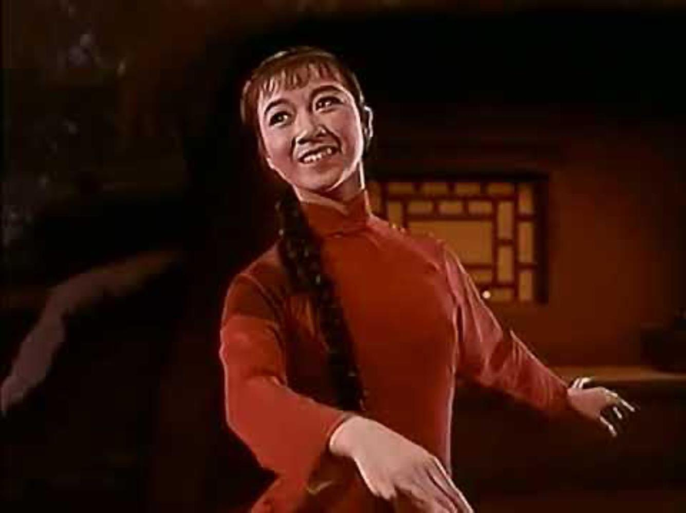
舞劇《白毛女》影片（1971）。在 YouTube 觀看 ↗
喜兒的獨舞：一個「極度扭曲的、簡直是歇斯底里的身體」，成為「一個被意識形態所譜寫的政治文本」。李海燕，頁 112
這個身體表達的，是誰的痛苦？
階級的種族化
階級不再是生產關係，而成為「一種本質化的身份，牢不可滅地銘刻在每一個人的靈魂和肉體上」。李海燕，頁 110。借用巴里巴（Balibar）與狄柯特（Dikötter）
成分制「執迷於出身和血統」（頁 113）。
看得見的階級
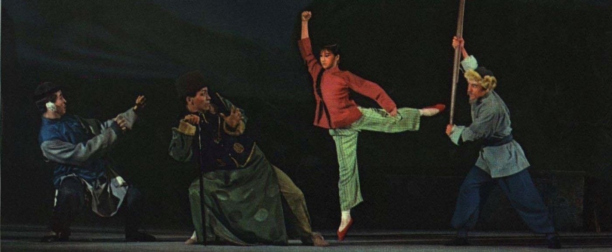
舞劇《白毛女》劇照（1967）
你怎麼看出誰屬於哪個階級？
剝削者
黑衣、半哈着腰，「像過街老鼠一般竄來竄去」。
勞動人民
「紅光滿面、眼睛閃閃發光」，「腰板直、步子正」。
李海燕，頁 113
「女人」的系譜 Tani Barlow, “Theorizing ‘Women’” (2004)
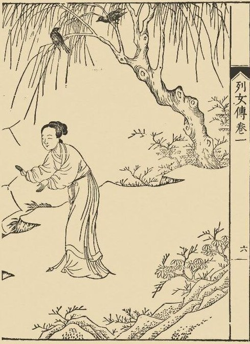
婦女儒家 · 1750–1920由家族中的位置界定
婦：已嫁的妻子
女：未嫁的女兒
→
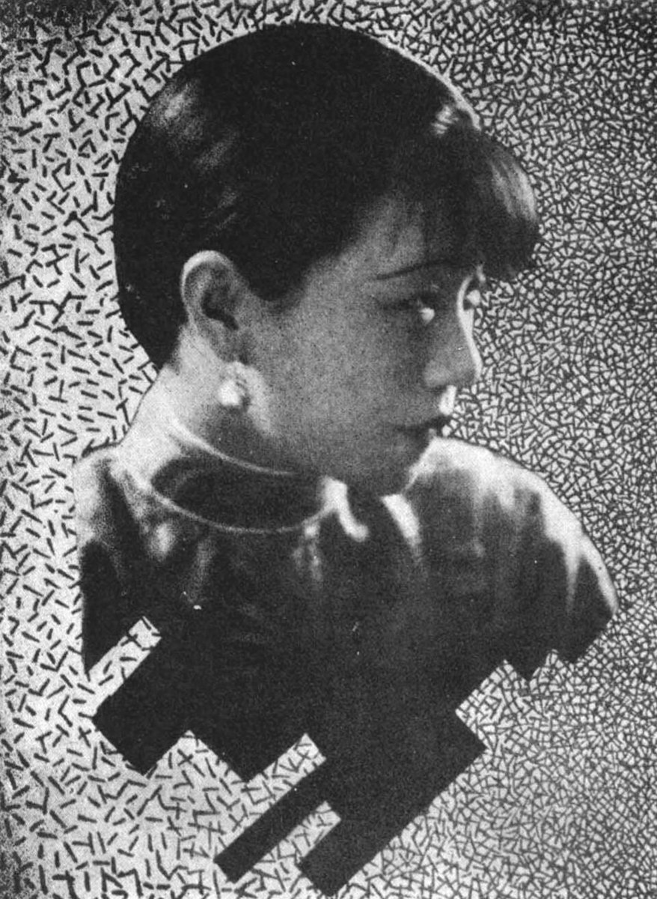
女性五四 · 1920s–30s由性別與性慾界定
→
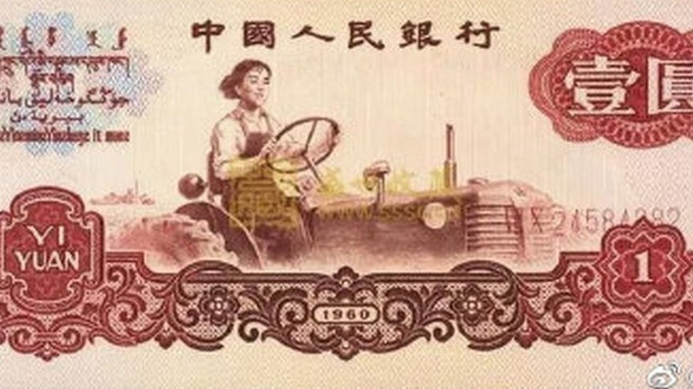
婦女毛時代 · 1940s–70s由國家與階級界定
→
女性 / 女人改革開放 · 1980s–由生理差異界定？
每個時代用什麼詞來生產女人？又把什麼留在詞語之外？
「婦女」：宗族裏的女人 1750–1920
《列女傳》卷一插圖，明刻本
女＝未嫁的女兒；婦＝已嫁的妻子。「婦之言服也」。
「在家為女，出嫁為婦，生子為母。」陳宏謀《教女遺規》
「坐莫動膝，立莫搖裙，喜莫大笑，怒莫高聲。」《女論語》
巴羅（Barlow）：「位置說明一切。」家族之外，沒有「女人」。
Barlow (2004), 39–46
「女性」：男人的他者 1900s–1930s
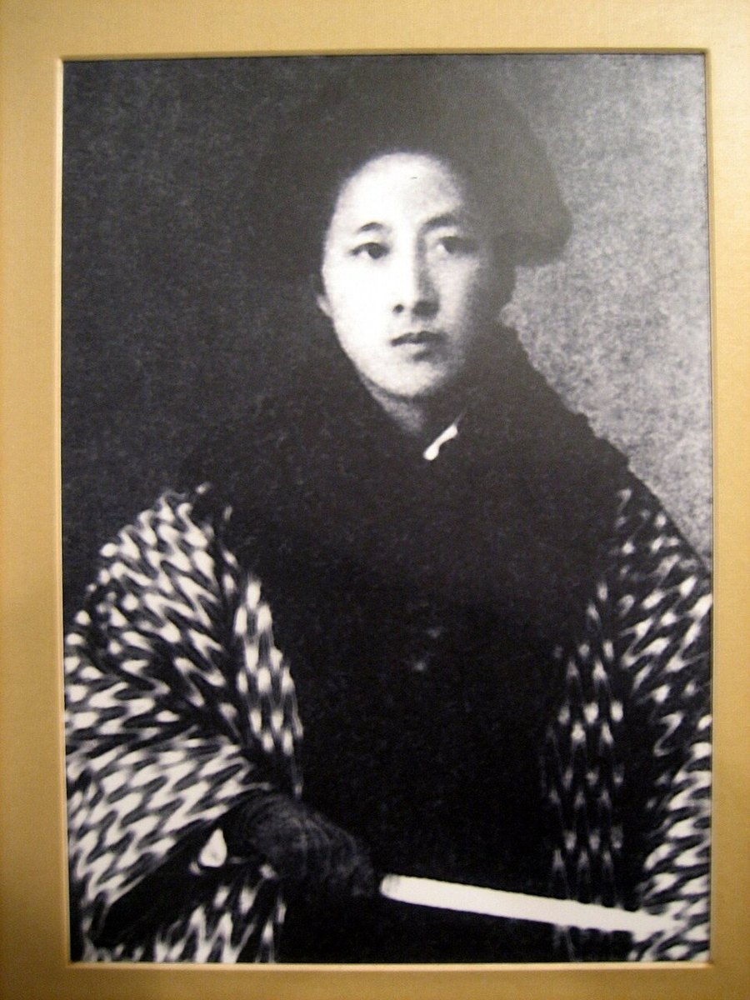
秋瑾（1875–1907）
〈敬告中國二萬萬女同胞〉，1904
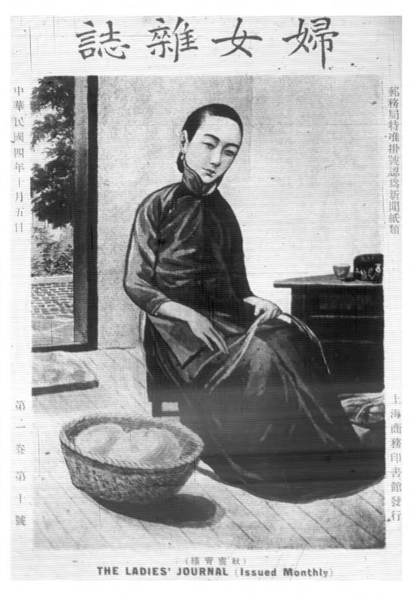
《婦女雜誌》，1915
阮玲玉，《良友》1928
- · 晚清：「二萬萬女同胞」：所有女人成為一個群體，為國家而戰
- · 1920s：新詞「女性」，性學多經日本轉譯
「中國女人只有在成為……男人的他者時，才成了『女性』。」
Barlow (2004), 54。暫譯。摩登女郎 modern girl
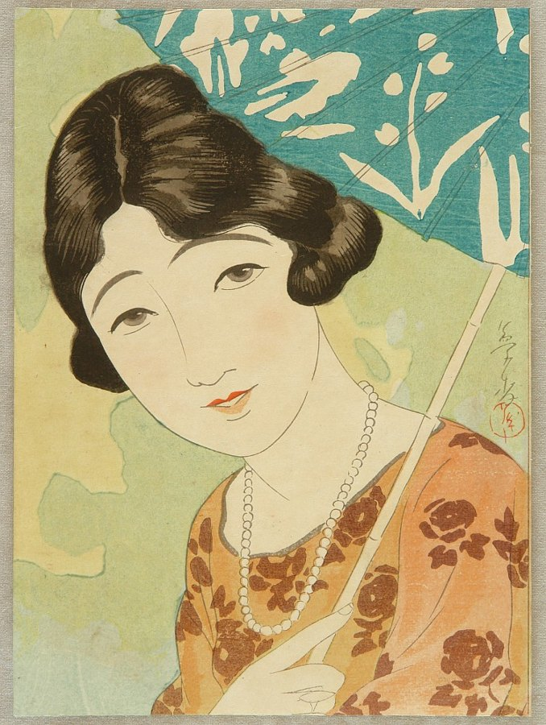
日本版畫
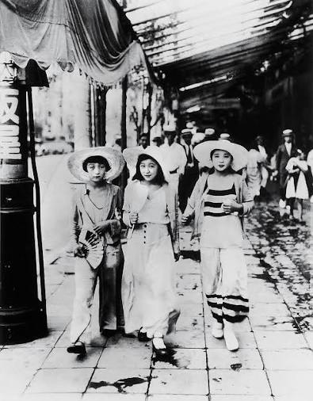
街頭
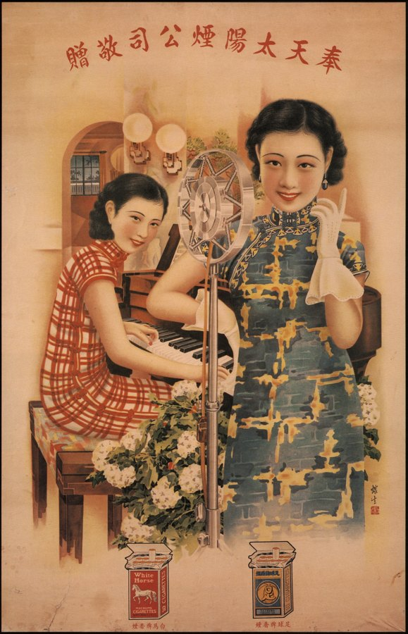
月份牌香煙廣告
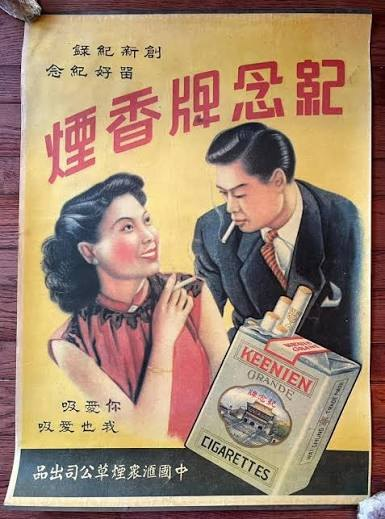
香煙廣告
「女性」很快離開知識分子的文章，進入電影、畫報、時裝和廣告：一個東亞殖民現代的形象。
Barlow (2004), 54–55
「婦女」：國家的女人 1930s–1970s
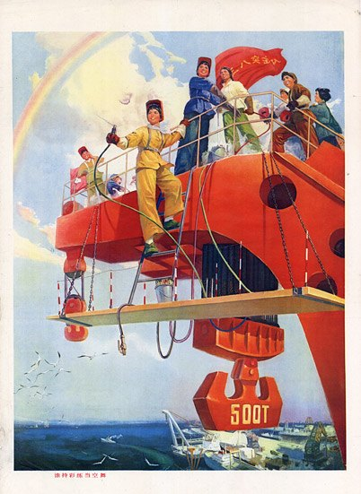
「鐵姑娘」宣傳畫
江西蘇區
不纏足、不戴耳環、不是童養媳，自稱「婦女」。
李海燕：喜兒「由一個性別的能指到階級的能指」（頁 116）。
Barlow (2004), 55–62
三個版本裏的強姦與懷孕
| 歌劇1945 | 電影1950 | 舞劇1971–72 |
|---|
| 強姦 | 喜兒羞辱，想自盡 | 受辱後立即拿起給大春的鞋 | 行姦未遂 |
| 黃世仁 | 喜兒求他娶自己 | 他要把她賣為娼妓 | （無） |
| 孩子 | 「小白毛」活下來 | 一產下便死去 | （無） |
| 大春 | 未婚夫 | 愛情 | 階級感情 |
「孽種」
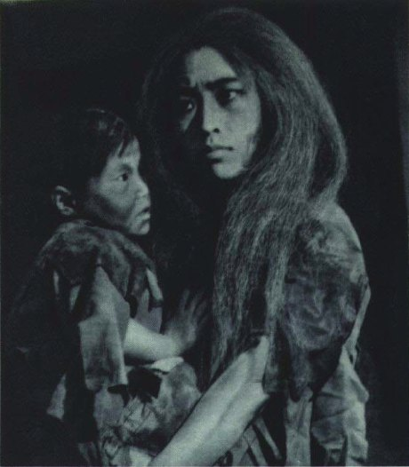
白毛女和小白毛。《人民畫報》1950 年 8 月
小白毛是一個階級「孽種」：她會觸犯「跨階級的聯姻的禁忌」。
「不論是正義的愛情還是非正義的強姦」，都因為把喜兒的性別身份推向前台而被刪掉。李海燕，頁 117
民族主義的父權制
越戰美軍士兵：「如果她們自己也跑到這兒來，那我們又是在為誰而戰呢？」李海燕引上野千鶴子（Ueno Chizuko）
對女人的暴力，只是「兩個父權制之間的衝突，而不是有關女人自身的人權和尊嚴的事」。李海燕，頁 117。查特基（Chatterjee）：「民族主義的父權制」
回到最初的傳說：女人在兩個父權組織之間「易手」。
李海燕的結論
性別差異「被視為最自然、最不容質疑的差異」，所以階級的種族化要借助它。
這個聯盟「埋沒了中國婦女成為獨立自主的……性別主體的可能性」。李海燕，頁 117–118
女性主義敘事學 feminist narratology
結構主義敘事學
形式
＋
女性主義文評
政治
→
女性主義敘事學
蘭瑟（Susan Lanser）1986
沃霍爾（Robyn Warhol）：敘事學提供「一套準確的術語」，能「準確地描寫小說話語的規約」。
申丹引，頁 138女性主義文評的弱點：「片面性和印象性」。這門課的要求也一樣：先精確地描述。
兩種「聲音」
女性主義文評
身份和權力。一個人物可以「找到了一種聲音」，「而不論這種聲音是否在文本中有所表達」。
敘事學
誰在敘述？老年的「我」是敘述者，年輕的「我」是人物。
喜兒「找到聲音」了嗎？訴苦時，她用誰的語言？
申丹，頁 140
「吸引型」與「疏遠型」 Warhol
申丹：「『女性技巧』本身就帶有褒義。」十九世紀女作家多用吸引型，因為她們「很少有公開表達自己觀點的機會」。
申丹，頁 139技巧沒有性別；選擇它的處境有。
抵抗的讀者
鮑德溫（James Baldwin）論《湯姆叔叔的小屋》：「傷感總是構成殘忍的標記。」申丹引，頁 141
沃霍爾（Warhol）：「敘述策略並不一定成功，很可能會失敗。」頁 142
《白毛女》是極端的吸引型。一個抵抗的觀眾會看見什麼？
語法與闡釋
敘事語法
倒敘、人稱、自由間接引語：男女作家共用，「無需考慮社會歷史語境」。
作品闡釋
為什麼這位作者在這個時代選擇這種形式？這裏需要性別與語境。
蘭瑟（Lanser）的「集體型」聲音：「我們」。上週 32111 的「我們」，訴苦大會的輪流發言，屬於哪一種？
申丹，頁 142–144
《殺夫》：誰在講林市的故事？
電影《殺夫》（1984）
報紙「自古以來，有道無奸不成殺」
叔叔阿母應該「抵抗成為一個烈女」
阿罔官「查某人忍忍也就過去」
鹿城「實在是冤孽啊！」
李昂《殺夫》（1983）：楔子、第一節、結尾
導修（11/12）：李昂《殺夫》
- · 李海燕：喜兒的暴力被翻譯成階級。林市的暴力被翻譯成什麼？
- · 巴羅（Barlow）：「婦女平權」與「烈女」並存。林市是哪一種女人？
- · 申丹：哪一種聲音最響？林市自己說了什麼？
- · 「怒莫高聲」；劉蓮的哭聲；林市的哀叫。叫聲算不算聲音？